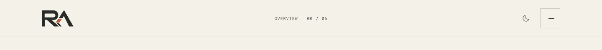
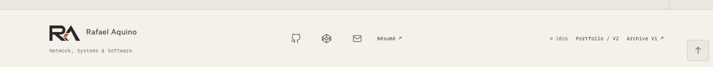
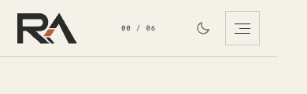
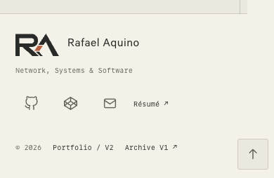
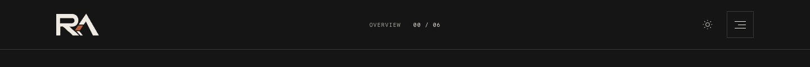
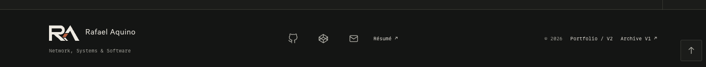
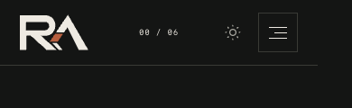
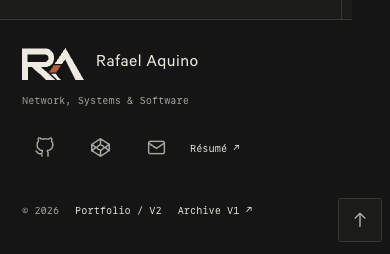

Custom SVG paths recreated from the supplied reference. Tab samples below render at actual pixel sizes; use 100% browser zoom. SVG icons adapt to the browser’s light/dark preference. Raster fallbacks use a solid warm-paper background.
SVG favicon · ICO (16/32/48) · 180px Apple icon · Full SVG mark








Back to portfolio